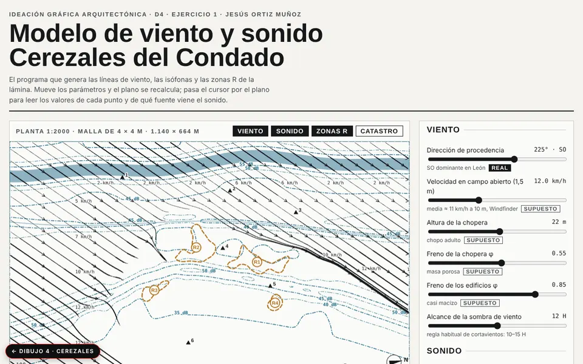
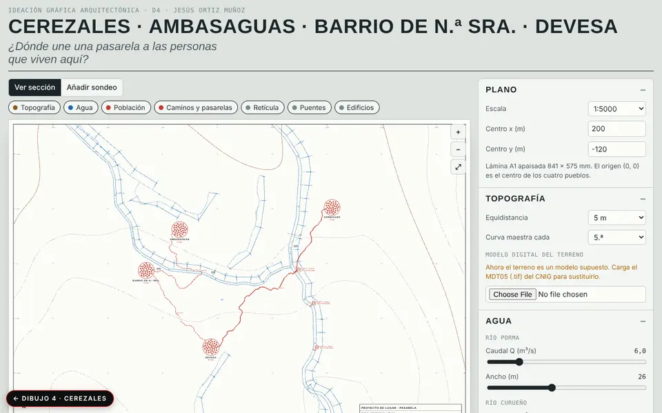

Panel A1 · Cerezales sentido
Cartografía por deriva: siete estados, el paseo y las manchas de lo que se siente al pasar. Escala 1:2000.
Ver panel →
Modelo de viento y sonido
Líneas de viento, isófonas y zonas R sobre una malla de 4 × 4 m. Cambia los parámetros y el plano se recalcula.
Abrir →
Modelo Curueño-Porma
Topografía, agua, población y caminos entre cuatro pueblos para decidir dónde va la pasarela. Admite el MDT05 real del CNIG.
Abrir →Cartografía subjetiva y modelos medibles
El panel cruza un paseo por el pueblo con siete estados (encuentro, calma, memoria, asombro, inquietud, miedo, indiferencia). Los modelos ponen números al lugar: un programa genera las líneas de viento, las isófonas y las zonas de ruido a partir de la dirección y velocidad del viento y del freno de choperas y edificios; otro dibuja la topografía y los ríos Curueño y Porma para colocar una pasarela donde vive la gente.